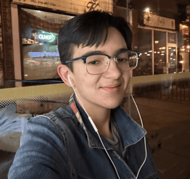

Zoe is a current MiST student at Mcgill University in Montreal, Quebec, Canada. They are from Dartmouth, NS originally and raised in Ottawa, Ontario. Their undergraduate studies were in Philosophy and English Literature, with some specialization in Digital Humanities. They enjoy going to the movies, live theatre, live music, and hosting shabbat dinners with their friends.
Zoe’s professional focus began in archives, as they did some undergraduate work with rare books. Since starting the program they have pivoted towards data science, taking courses on web design and database management. They enjoy working in archives and libraries, both of which they’ve done on a volunteer basis. They love linking information to user needs and mending gaps in the systems that make information less accessible. They’re eager to gain more experience and expand their portfolio.
2017-2021
11.32 CGPA
Minor in English
Focus in Philosophy
Focus in Digital Humanities
Skills:
2023-ongoing
Currently completed all required core courses, as well as:
[Add GPA? Must find. Is good!]
I decided to enrol in the MiST a few years after moving to Quebec because I was looking forward to my future career goals. I quickly fell in love with the program, my peers, and the communities surrounding the information science profession. I was especially intrigued by the long history of information science, which has grown alongside person-to-person communication technologies over the last century. It’s no small task to keep up with, and keep sane within.
My first paragraph. Adding things to this paragraph.

More paragraph content
As part of a blended undergraduate/graduate seminar class in the philosophy department, me and my colleagues designed and implemented a series of workshops for teaching philosophy to children via picture books. My book is pictured on the right.
I worked under the guidance of Dr. Melissa Frankel at Carleton University. You can read more about P4C here.
Zoe.Lyons.999@gmail.com
Alternate: Zoe.Lyons@mail.mcgill.ca
Phone: 613-983-2431
LinkedIn Profile
| Company | Contact | Country |
|---|---|---|
| Alfreds Futterkiste | Maria Anders | |
| Centro comercial Moctezuma | Francisco Chang | Mexico |
Playing with font size
This font size is being determined by a CSS class
This font size is being determined by a different CSS class